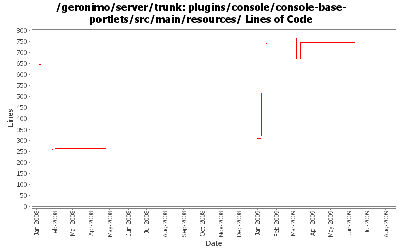

[root]/plugins/console/console-base-portlets/src/main/resources

| Author | Changes | Lines of Code | Lines per Change |
|---|---|---|---|
| Totals | 67 (100.0%) | 1891 (100.0%) | 28.2 |
| dwoods | 28 (41.8%) | 1631 (86.3%) | 58.2 |
| jbohn | 2 (3.0%) | 98 (5.2%) | 49.0 |
| xuhaihong | 12 (17.9%) | 92 (4.9%) | 7.6 |
| djencks | 8 (11.9%) | 36 (1.9%) | 4.5 |
| gawor | 12 (17.9%) | 27 (1.4%) | 2.2 |
| vamsic007 | 5 (7.5%) | 7 (0.4%) | 1.4 |
GERONIMO-4763 i18n properties files should be converted to ascii at build time. (Patch from Shawn Jiang)
0 lines of code changed in 7 files:
GERONIMO-4747 a {0} did not get replaced in the last portlet of console ---> Apache HTTP (Patch from Shawn Jiang)
1 lines of code changed in 1 file:
GERONIMO-3389 java.lang.UnsatisfiedLinkError is thrown when create a Tomcat APR HTTP Connector (Patch from Shawn Jiang)
2 lines of code changed in 2 files:
GERONIMO-4517 Apply unified message display style(G-4484) to javascript alert messages. Together with the localization of these messages. Thanks for the patch, Gang Yin
89 lines of code changed in 2 files:
GERONIMO-4507 Admin console should honor the priority of user agent's language setting - patch by Gang Yin
98 lines of code changed in 2 files:
some spell checking
5 lines of code changed in 1 file:
GERONIMO-4474 Pull out the text in the JSP files to resource bundle files. Applied patch jsp-localization-jetty-connector.patch from Gang Yin.
26 lines of code changed in 2 files:
GERONIMO-4474 Pull out the text in the JSP files to resource bundle files. Applied jsp-localization-tomcat6-connector.patch, jsp-localization-securityrealm.patch and jsp-localization-activemq-ra.patch from Gang Yin.
212 lines of code changed in 4 files:
GERONIMO-4484 Extraction, localization and display of messages generated in portlets. Applied common-message_fix.patch from Gang Yin.
4 lines of code changed in 2 files:
GERONIMO-4507 Admin console should honor the priority of user agent's language setting. Applied patch from Gang Yin.
0 lines of code changed in 1 file:
GERONIMO-4474 Pull out the text in the JSP files to resource bundle files. Applied jsp-localization-fix.patch from Gang Yin.
290 lines of code changed in 4 files:
GERONIMO-4484 Extraction, localization and display of messages generated in portlets. Applied common-message-base.patch and common-message-core.patch from Gang Yin, with some minor updates.
192 lines of code changed in 2 files:
GERONIMO-4025 applied GERONIMO-4025-configmanager-and-infomanager.patch from Rex Wang.
13 lines of code changed in 2 files:
GERONIMO-4474 Additional localization patches from Gang Yin.
2 lines of code changed in 2 files:
GERONIMO-4474 Pull out the text in the JSP files to resource bundle files. Patches provided by Gang Yin.
223 lines of code changed in 3 files:
make server log viewer look a little nicer
1 lines of code changed in 1 file:
GERONIMO-4148 Add OS info to the Server Information portlet
20 lines of code changed in 2 files:
CA portlet updates
1 lines of code changed in 1 file:
GERONIMO-3984 Keystores portlet - Unlock keystore page shows wrong label on submit button
o Merging rev 651153 from branches\2.1
o Patched unlockKeystore.jsp and consolebase.properties.
o Can someone tell me what to do about consolebase_zh.properties?
1 lines of code changed in 1 file:
Fix i18n problems in console. Patch from YunFeng Ma. (GERONIMO-3865)
2 lines of code changed in 2 files:
Once the Config File is changed from LogManagerPortlet, the logFile used by LogViewerPortlet should be changed to the one from new configuration or else it will result in an error.
1 lines of code changed in 1 file:
fixed a few spelling mistakes, spacing
6 lines of code changed in 1 file:
GERONIMO-1775 2nd internationalization patch from YunFeng Ma, with some spelling corrections
0 lines of code changed in 2 files:
fixes for i18n update
3 lines of code changed in 2 files:
GERONIMO-3757 KeyStore type can't be changed
o Allow creation of all possible keystore types supported. Keystore type is no longer restricted to JKS.
o Added a type parameter to create keystore methods.
o Keystores portlet will now allow creating and managing all types of keystores.
o This revision will simplify the configuration changes required to run G on a JVM that does not support JKS keystores (for e.g., Harmony).
2 lines of code changed in 1 file:
svn props
1 lines of code changed in 1 file:
Added "consolebase.common.view" property to consolebase.properties.
Will someone update consolebase_zh.properties file?
2 lines of code changed in 1 file:
GERONIMO-1775 apply 2nd patch. Console-testsuite passes for me and I didn't see any problems
35 lines of code changed in 2 files:
GERONIMO-3732 clean up resource bundles for new console plugin
0 lines of code changed in 2 files:
more i18n fixes for console
5 lines of code changed in 2 files:
GERONIMO-3734. Remove unused resource property.
1 lines of code changed in 2 files:
fix a few resource bundle names/keys in jsps
4 lines of code changed in 2 files:
GERONIMO-1775 Fix 2 failing tests in the LinkCheckTest for Server Information portlet
4 lines of code changed in 2 files:
GERONIMO-1775 Internationalization of the Admin Console. First patch from YunFeng.
645 lines of code changed in 2 files: